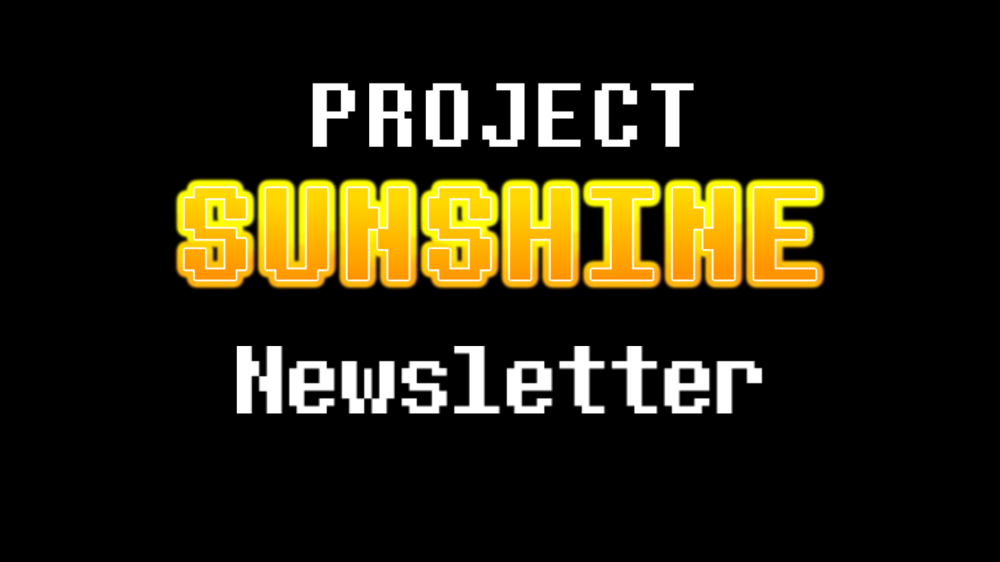
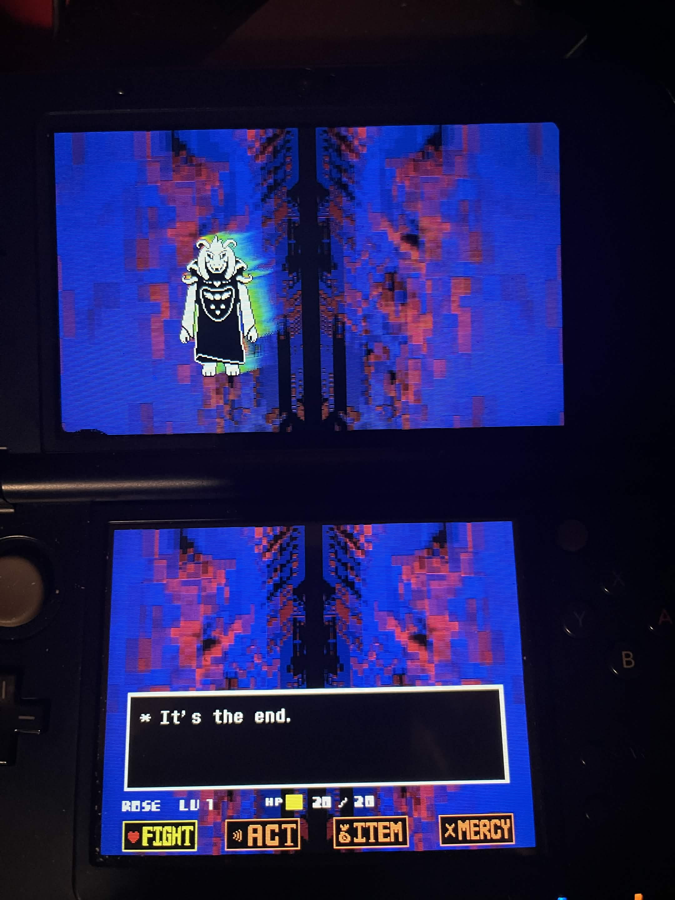
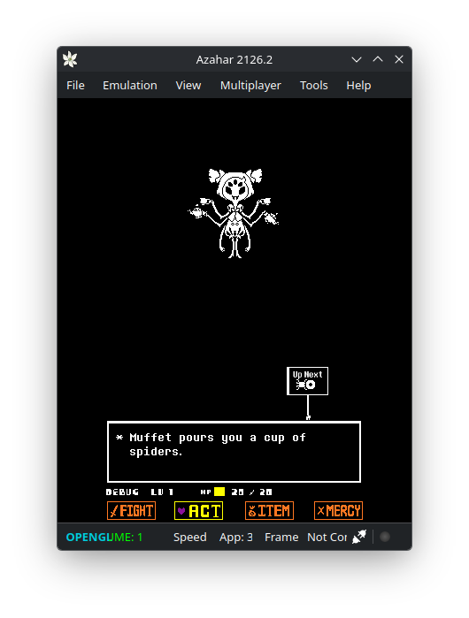
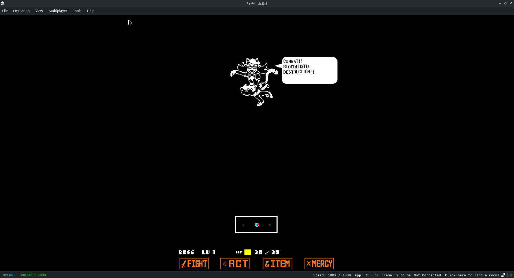
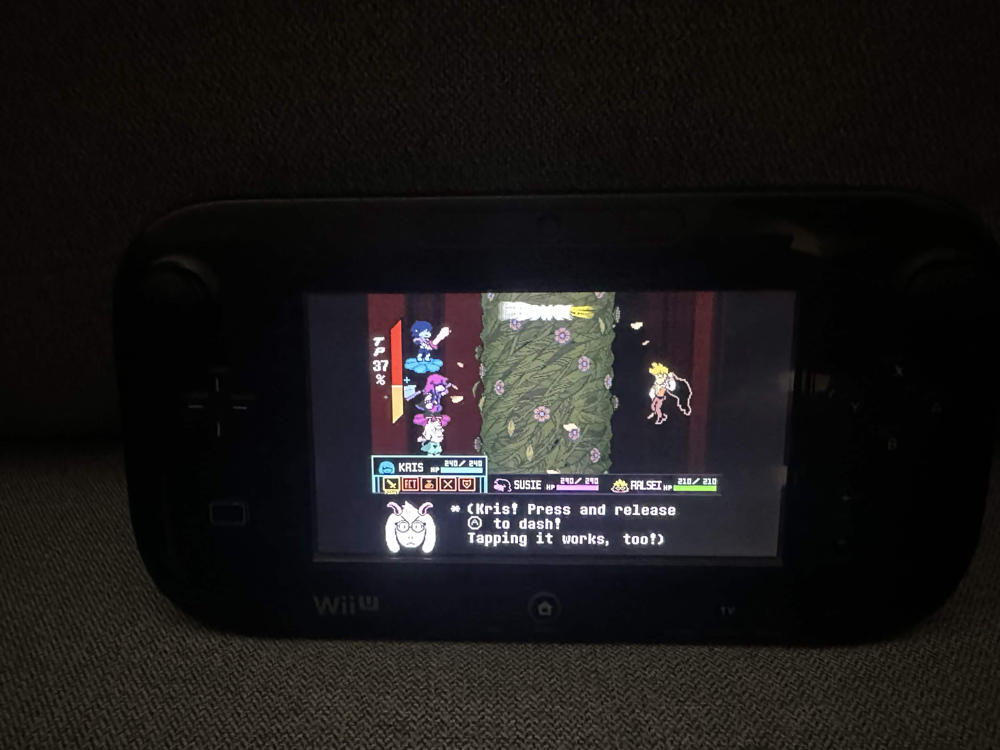
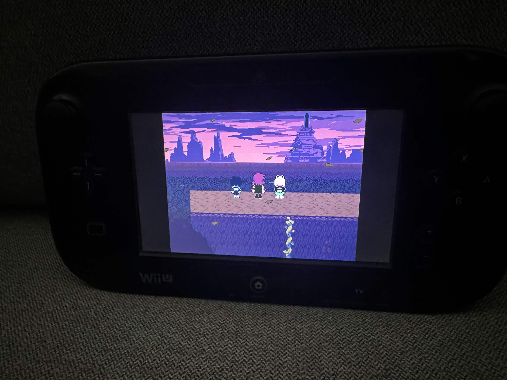
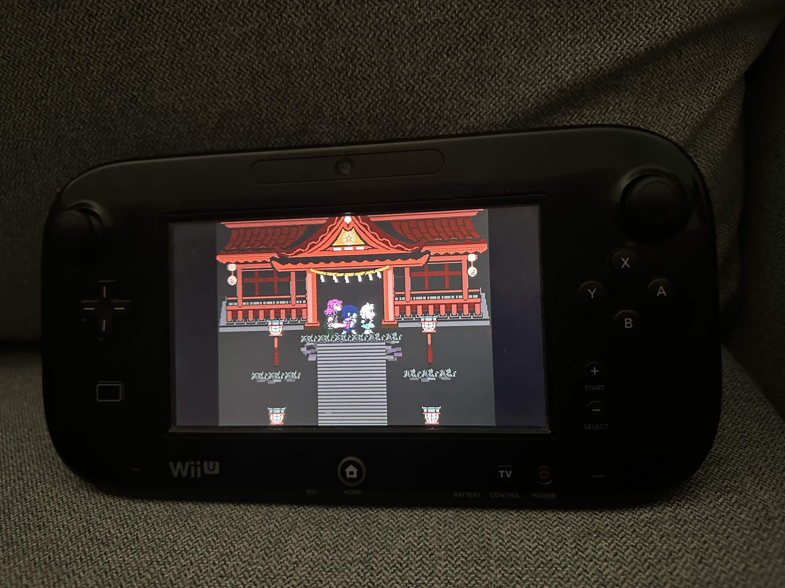

November Newsletter
I've been counting the minutes on the clock...
Two months without a newsletter?!?!
Guess I might as well...
Cinnamon Launcher
Cinnamon Launcher has been released (if you SOMEHOW didn't know) and we've been working on improving performance for games all around the board.
We've been making a lot of optimizations for the general runner, but we are putting in special optimizations for specific games. Those games being:
- DELTARUNE Chapters 1-5
- DELTARUNE Chapter 1+2 DEMO
- UNDERTALE
- SURVEY_PROGRAM
- UNDERTALE Yellow
- TS! UNDERSWAP
- Sonic SMS Remake
- SONIC.EXE
- Paper Mario 3D Land
- AM2R (Another Metroid 2 Remake)
- Pizza Tower Sage 2019
- Pizza Tower (MAYBE, it won't be locked 60)
And probably some more if I feel like it and if demand for that game is high.
We've already put in quite a few for UNDERTALE, DELTARUNE Chapter 1, and DELTARUNE Chapter 2, and to say the least, they run way better on Old 3DS.
Next update should fix a softlock in DELTARUNE Chapter 2 with Susies laughter aswell as some optimizations.
Anyways, we're still working on improving the launcher, and making it a bit more customizable, such as new themes for later...
Hope everyone likes them on release!
UNDERTALE 3DS
No, it is NOT infact dead in the water..
Work is still being done, i'll show a few sneaks below!

Here's a litle sneak of the Asriel fight running on both screens!

Muffet fight on both screens!

Mad Mew Mew fight on both screens!
Playtesters have been playtesting the full game with the patch.. we've been working on fixing those bugs and integrating stuff better with the 3DS dual screens, etc.
It shall be out when it's ready! You can play single screen UNDERTALE via Cinnamon Launcher, still!
Wii U
We gave Wii U a ReviveMint, it's alive again..
Shaders now work on Wii U aswell as games like Pizza Tower and DELTARUNE Chapters 1-5.

Flowery fight on a real Wii U!

Cliffs on a real Wii U!

Platforming on a real Wii U!
John Gutter in Cemu
Wrapping it up
Well, thats it for today!
Expect updates soon, I try to update 3DS twice a week usually, so look out for that!